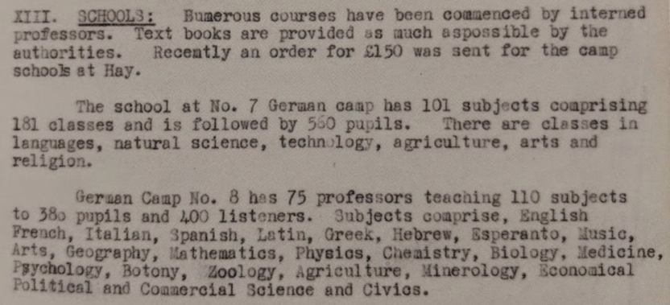
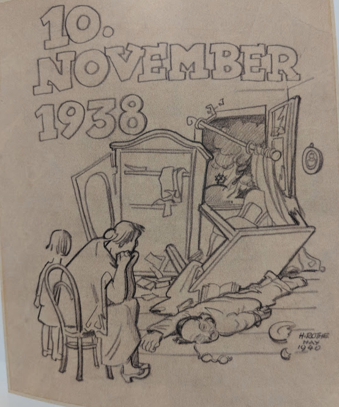
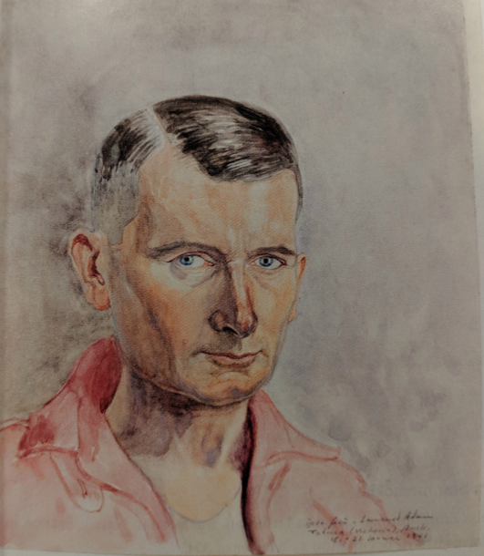
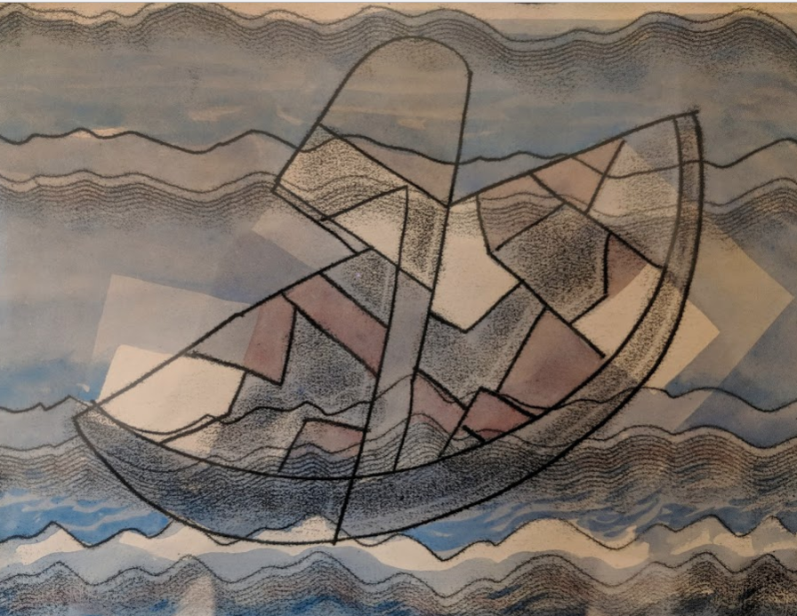

I'm not quite sure how Monash University Press has done this, but this is a high production but relatively low volume book, so I was expecting its price to be around the $60 mark. It is $39.95 in shops, but can be purchased for $30.95 from Booktopia. This compares more than favourably to the extraordinary $150 odd price that Palgrave charged for the previous book I launched – Max Corden's memoirs.
I'm not quite sure how Monash University Press has done this, but this is a high production but relatively low volume book, so I was expecting its price to be around the $60 mark. It is $39.95 in shops, but can be purchased for $30.95 from Booktopia. This compares more than favourably to the extraordinary $150 odd price that Palgrave charged for the previous book I launched – Max Corden's memoirs.
I have reached a new stage in my life. It is the book-launching stage, first identified in Egyptian writings where it was called the "scroll rolling" stage of life, though we only know this second hand from Phoenician sources. At least judging from my experience, it comes upon one quite suddenly. I hadn't launched any books until this May and now I've launched two. Naturally, at my stage of life, I would be a fool not to make myself available for your next book launch.
In any event I was asked to launch a marvellous book Dunera Lives – which I recommend to you not least because it's text is deliciously short and well written with a whole slew of lavish illustration showing you just how much class was incarcerated on that boat and in the camps when it arrived in Australia.
Checking sources as I wrote my speech I came upon a review of the first popular book on the Dunera sticky taped into the cover of Cyril Pearl's The Dunera Scandal by my father. He ended it with the story of one of the Dunera refugees being shown a galah in a tree beyond the barbed wire by a soldier. "Have you ever seen one of those before?". The soldier asked. "Yes" came the reply, but on that occasion it was in the cage." The book is full of this kind of liveliness and cheek.
In any event, the book was being worked on as historian Ken Inglis's final project. He died before it could be completed but it was then taken to completion by his friend, American academic historian Jay Winter, historian at Monash University Seamus Spark and Carol Bunyan who was born in Hay and has taken a huge interest in the Dunera story and in documenting it. Though many of the speeches were apologetic that it couldn't be as good as Ken would have made it, it's different to what Ken would have delivered, but not worse. In particular Seamus's researches turned up a treasure trove of artefacts that are beautifully reproduced.

There was a lot of class when they arrived. But they added to that class. Here's the Red Cross report on the Hay Camps 7 and 8 which took the Dunera Boys.I spoke after Rai Gaita, Jay Winter and Seamus. There were actually two launches. One on Sunday 8th July at the Melbourne Jewish Museum (this was after a launch at the National Library in Canberra) and one at Readings Hawthorn the next day.
In any event, my speech is below. As you'll note, I end it, as I ended my speech launching Max Corden's memoirs with a quote about Captain Broughton which I think of as a kind of incantation to empathy. I'd love to get a fund going to endow an annual Broughton Prize for a conspicuous act of empathy. Anyone fancy helping?
Remarks on launching Dunera Lives
As I discovered when I spoke yesterday, though none of the speakers planned it this way, the speeches you’ve just heard take me to the point I want to make. Note that none of the authors of the book were relatives of the Dunera Boys. And the one with the most distant physical connection – living on another continent – is the only one who’s Jewish.
Jay spoke of the story as the triumph of Jewish customs and ways of life encountering and being re-lived in a new land, I wanted to celebrate the way in which the host culture – Australian non-Jewish culture and the Australian people rose to the occasion.
Many of you will have seen the Hollywood movie “Pretty Woman” which ends in a famous scene which re-enacts the archetypal folk tale of Rapunzel. After performing the requisite heroics, Richard Gere as the hero asks Julia Roberts, now secure in his arms as the heroine “So what happened when he climbed up the tower and rescued her?”. She answers “She rescues him right back”.

A Dunera Boy's sketch of KristallnachtThe Australian people rescued the Dunera Boys. Australian officialdom was none too keen.
(a) German Nazis. Having warned this group prior to sailing of my methods should trouble arise, . . . their behaviour has been exemplary. They are of a fine type, honest and straightforward, and extremely well- disciplined. I am quite prepared to admit however, that they are highly dangerous.
(b) Italians. This group are filthy in their habits, without a vestige of discipline, and are cowards to a degree.
(c) German and Austrian Jews. Can only be described as subversive liars, demanding and arrogant, and I have taken steps to bring them into my line of thought. They will quote any person from a Prime Minister to the President of the United States as personal references, and they are definitely not to be trusted in word or deed.
But the people themselves were a different kettle of fish, including that man with the rifle in all the guises of the story that Jay mentioned – I heard that the Dunera Boy was asked to hold the soldier’s rifle so he could light a smoke on the train to Hay. And the Dunera Boys rescued them right back. Rai Gaita spoke of dignity. Here we’re talking about dignity and difference. And it turns out there’s a chasm between people’s view of difference – their way of comprehending it – from a distance, and from more personal encounters.

Its remarkable how much of the art in the book is very good – as with this example. the book also contains Erwin Fabian's fabulous portrait of my father. Let me tell you of the words of someone who’d just participated in the rescue of children from a sunken boat. “It was quite a joy to hold the little kids’ hands and watch them smile”. Those are the words of Naval Commander Norman Banks. We know the episode from some other words spoken a few months later in an election campaign. “We decide who comes here and the terms on which they come.” Yes it was the sinking of a refugee boat which provided the occasion for the Prime Minister to claim that the refugees had chucked their kids in the water for a PR savvy photo op. To this day the official meanness towards refugees, at least those arriving by boat is maintained by making sure no Australian can get close to them, can even see film of them. But as initially wary Australians encountered the refugees, their wariness melted away. They were just like us. This has happened around regional Australia all over again in the last decade or so as regional towns have welcomed refugee communities to their number. We don’t really understand exactly why some things are so memorable. We know that there were plenty of battles in WWI. Yet one of them rattles around in the Australian psyche so much more than all the others – Gallipoli. Similarly there were many ships bringing out migrants from the old to the new world. Many people living in silver cities of various kinds. And yet this unlikely story of a few thousand stray Europeans of indeterminate status finding themselves in the desert whiling away their time playing soccer – attending an improvised university, and performing and attending musical concerts and reviews – has produced a steady stream of books and, improbably of all, a TV mini-series. Australia was full of people who rose to that occasion. People like Ken Inglis who marvelled at these strange sophisticated souls who’d turned up at Melbourne University and spent his final years trying to make sense of it – and, as a good historian will, to make his own contribution to it. Like Carol Bunyan who was brought up in Hay and who beavered away on her database of the Dunera Boys sufficiently that she knows more about my fathers’ whereabouts during that time than I do. I told Carol that Dad stayed in Hay. That he wasn’t moved to Tatura. But her database says otherwise.
If this work reminds you of Paul Klee, it should. It's painter, Ludwig Hirschfeld-Mack studied at the Bauhaus before finding his way to Australia (no doubt via some circuitous route) on the Dunera. He was quite a bit older than my father and ended up as art master at Geelong Grammar where he wrought the entrance gates and painted a whole series of frescoes of Christian themes in the chapel there. I bought this watercolour called The Boat at an auction house about twenty or so years ago before I could have imagined its usefulness during the book launching period of my life. However, I want to close by reading you words written about someone who helped those Dunera Boys who were released from captivity into the Australian Army’s 8th Employment Company, which as we know, they the Dunera Boys could not desist from calling the 8th Enjoyment Company. They’re about the man who welded an extraordinarily diverse, and it seems from the record, incorrigibly cheeky group of men into an effective working unit. His name was Edward Renate Mugunga Broughton. He wasn’t Jewish. He wasn’t even Australian though he was antipodean in the truest sense. He was a mixed blood Maori born in Ngapuke, New Zealand in 1884. He lied about his age to fight for his country in the Boer War when his true age was 16. He fought with the Maori Battalion at Gallipoli and was mentioned in dispatches. He then fought on the Western Front and in a Russian regiment. Having overstated his age for the Boer War, he understated it by 16 years to fight in World War Two. This is what Dunera Boy Irwin Frenkel said about him on his death in 1955:Keenly intelligent, well-read, endowed with a superb sense of humour, completely untainted by any racial prejudice… deeply interested in human beings, he did not only gain immediate respect and obedience, but also the love and affection of the unit. He enjoyed hugely being at its head, learned and meticulously respected Jewish customs, and was immensely proud of the unit because of the splendid work it did, humbly unaware of the fact that it was only he who could have turned these people into willing manual labourers. … He engaged in incessant publicity war on our behalf and fought hard to have our status changed, only to be booted out by the Army eventually. After being shoved around as flotsam and jetsam for many years he managed… to make us feel like human beings again. He restored our faith in man, as something more than 92 percent water and a few chemicals. He was a scholar and a gentleman.
As Broughton said to one of his refugee charges from across the world “You and me, we’re the same”. And so we are.
Mainly, perhaps only, for Nicholas
My cousin has a crayon sketch by Erwin Fabian, a remarkable likeness of my maternal grandfather who was a guard at the Hay camp (which must have been a delightfully cushy job with a bunch of extremely interesting and deeply peaceful people).
On an occasion or two when Fred came on TV (in the '70s) my father, who had just retired as a soil scientist working on the problems of irrigation areas, would say, "Listen to this bloke! He's good." They may well have crossed paths. Dad had been tempted to apply for a job with Crawford not long after the war.
I met Ann when we both worked as volunteers at John Curtin House in the 1977 federal election campaign. She was kind, thoughtful, and the most interesting person I was in daily contact with during my month or two there. I get the impression that many conversations in the Gruen household must have centred around the question, "Where, in this matter, does the public interest lie?"
One of the reasons I sometimes throw ideas into this blog is the suspicion that some undiscovered, simply explainable failures of conventional economics are fundamental to the decline of the West, for which evidence emerges almost daily. My approach is through the Darwinist hard science of human behaviour, using the methods of Fred Skinner (1904-1990), trying to adapt them to the macro scale. This science is free of the fallacies of Social Darwinism, something one may not be able to say about classical economics. One of Skinner's rules is something like: "Don't blame people. Look at their culture. That is what controls them. Then see what you can do to change it." I am old enough to realise that the most riveting truth will be fought bitterly by vested interests, and may not get up. That has happened to Fred Skinner's ideas. It is probably one of the indicators that the West is going downhill. These days when people have (thankfully) forgotten all about Nietsche, Skinner's best seller, "Beyond freedom and dignity" might have been called "Why freedom and dignity are weasel words". One of the ways science advances is by throwing out weasel words (with which the humanities abound). It gets no thanks for this from turf defenders in science or the humanities.
Incidentally, I suspect, but I am only working on it, that Hayek may be using "serfdom"
as a pejorative term for "employment" (albeit in a compulsory form).
Best regards,
Dick
My grandfather was a chain smoker with a wicked sense of humour. Handing his rifle to a Dunera Boy so he could light up is just the kind of lark he would have got up to.